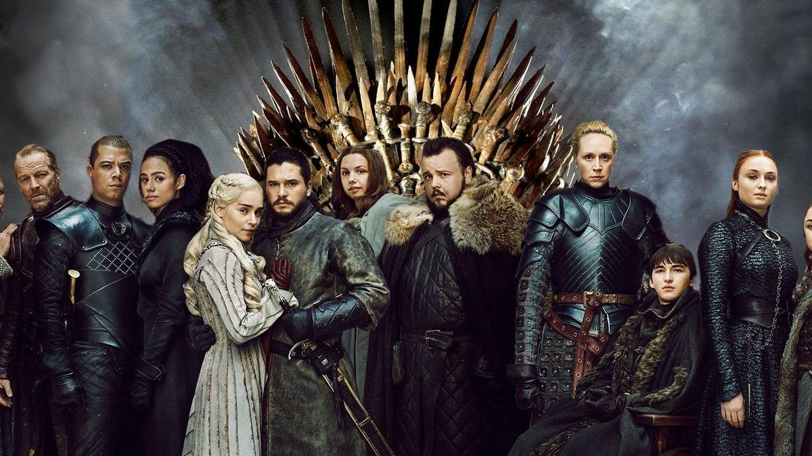
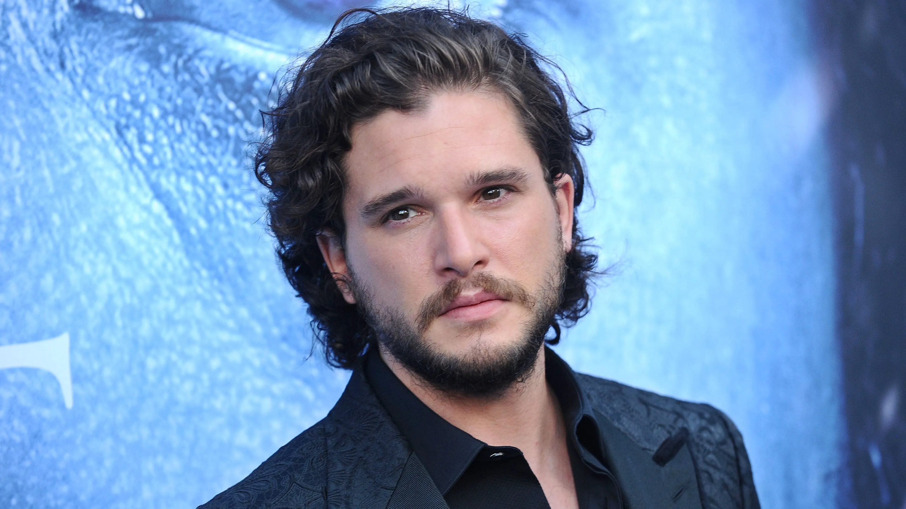

Principal
Juego de Tronos (en inglés, Game of Thrones) es una serie de televisión de fantasía medieval estadounidense creada por David Benioff y D. B. Weiss para la cadena HBO. Es una adaptación de la serie de novelas Canción de hielo y fuego, del escritor George R. R. Martin.
Reparto
| Actor/Actriz | Foto |
|---|---|
| Emilia Clarke | |
| Kit Harington |  |
| Peter Dinklage |